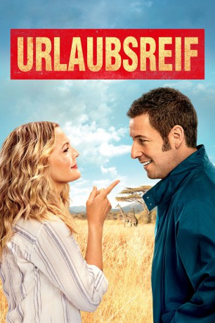

gesehen am 25.06.2015
gesehen am 25.06.2015Alternativ: Blended gesehen am 25.06.2015
 
 IMDB-Wertung: 6.5 / 10
IMDB-Wertung: 6.5 / 10  Metascore:
Metascore: 
Lauren und Jim treffen sich zu einem romantischen Blind Date. Beide sind Single und haben neben gescheiterten Partnerschaften auch Kinder im Gepäck. Leider verläuft das Date katastrophal; sie entschließen sich, einander niemals wiederzusehen. Aufgrund einer Verwechslung der Kreditkarten im Restaurant muss Jim jedoch kurze Zeit später doch bei Lauren vorbeischauen. Dort erfahren beide, dass Laurens Schwester von ihrem Freund verlassen wurde und der gemeinsame Afrikaurlaub somit ins Wasser fällt. Wie der Zufall es will, ist dieser Freund Jims Boss. Jim beschließt, ihm die Reise nach Afrika abzukaufen - Lauren kommt auf die gleiche Idee und fliegt anstelle ihrer Schwester in den Urlaub. Im Resort treffen die beiden Familien dann aufeinander. Dabei stellen Jim und Lauren fest, dass sie mehr füreinander empfinden, als ihnen vorher klar war…
Jahr: 2014
Dauer: 117 Minuten
FSK: 0
Land: USA Studio: Warner Home VideoTonspuren: DD5.1 - ,
Untertitel: Deutsch, Englisch,
Auflösung: 1080p (1920x1040) Größe: 12288 MB
Regisseur:  Frank Coraci
Frank Coraci
Drehbuch: Ivan Menchell, Clare Sera
Soundtrack: Rupert Gregson-Williams
Darsteller:
 Adam Sandler als Jim
Adam Sandler als Jim Drew Barrymore als Lauren
Drew Barrymore als Lauren Kevin Nealon als Eddy
Kevin Nealon als Eddy Terry Crews als Nickens
Terry Crews als Nickens Wendi McLendon-Covey als Jen
Wendi McLendon-Covey als Jen Bella Thorne als Hilary
Bella Thorne als Hilary Shaquille O'Neal als Doug
Shaquille O'Neal als Doug Jackie Sandler als Hollywood Stepmom
Jackie Sandler als Hollywood Stepmom Sadie Sandler als Little League Announcer
Sadie Sandler als Little League Announcer Alexis Arquette als Georgina
Alexis Arquette als Georgina Susan Yeagley als Southern Stepmom
Susan Yeagley als Southern Stepmom Mary Pat Gleason als Pharmacy Cashier
Mary Pat Gleason als Pharmacy Cashier Allen Covert als 220 Tom
Allen Covert als 220 Tom Tim Herlihy als Basketball Dad
Tim Herlihy als Basketball Dad Jared Sandler als Cute Teenage Boy
Jared Sandler als Cute Teenage Boy Lauren Lapkus als Tracy
Lauren Lapkus als Tracy Anna Colwell als Bubbles
Anna Colwell als Bubbles Jonathan Loughran als Umpire
Jonathan Loughran als Umpire Chris Titone als Umpire
Chris Titone als Umpire Rob Moran als Baseball Dad
Rob Moran als Baseball Dad Michael Buscemi als Baseball Dad
Michael Buscemi als Baseball Dad Robert Harvey als Baseball Fan
Robert Harvey als Baseball Fan Christine Horn als Tribal Villager , uncredited
Christine Horn als Tribal Villager , uncreditedDatei: X:\2014(N-Z)\Urlaubsreif (2014, FSKo.Al., 1920x1040).mkv seit 16.06.2015
Festplatte: HD 2013(I-Z)-2014(A-Z)
 Es gibt insgesamt 163 Filme in der Gruppe '2014(N-Z)'
Es gibt insgesamt 163 Filme in der Gruppe '2014(N-Z)'